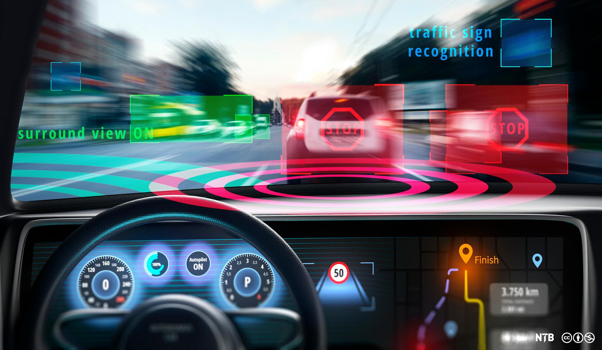
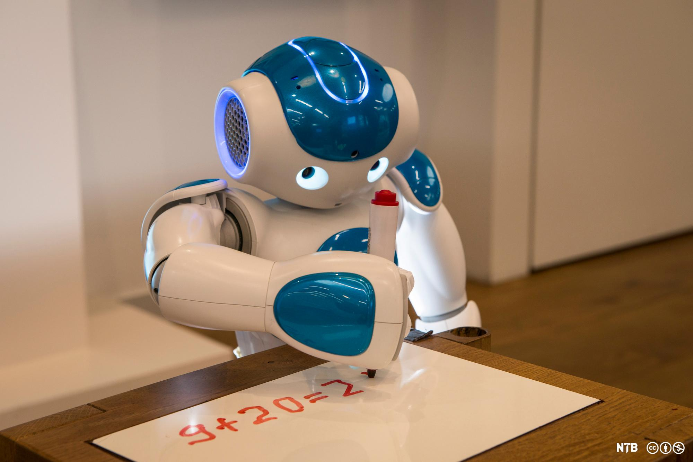
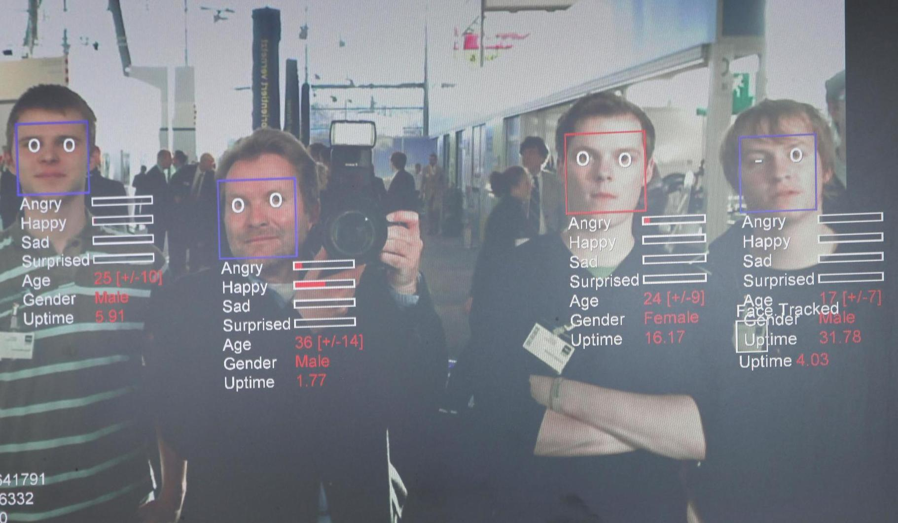

Ved hjelp av kunstig intelligens (KI) kan teknologi i dag sortere data og løse problemer på en måte som etterligner menneskelig intelligens. Hvordan påvirker dette oss som individer og samfunnsborgere?
Skrevet av: Ragna Marie Tørdal
Link til selve artikkel
Oppsumering
1. Teknologiens rolle KI kan enten styre samfunnet selv eller brukes bevisst av mennesker for utvikling.
2. Arbeid og læring KI effektiviserer, men kan erstatte jobber og utfordre personvern i utdanning.
3. Overvåkning og data KI gir både nytte og risiko, fra ansiktsgjenkjenning til myndighetsovervåkning.
4. Etiske utfordringer KI kan forsterke fordommer, spre desinformasjon og true demokratiske verdier.
Velsignelse eller forbannelse?
Mange oppgaver som vanligvis måtte løses med menneskelig intelligens, kan nå gjøres av maskiner. Men hva skjer når teknologien beveger seg inn på områder som før har vært forbeholdt menneskelig aktivitet? Vil det skape et bedre samfunn, eller kan vi ende opp med å bli styrt av teknologiske monstre uten empati og moral?
Stipendiat Lisa Reutter ved NTNU viser til at svaret er avhengig av hvilket grunnleggende syn vi har på teknologi og kunstig intelligens.
- Vi kan oppfatte teknologi og kunstig intelligens som en uavhengig kraft som utvikles på egne premisser, og som over tid vil endre samfunnet vi lever i (teknologideterminisme).
- Eller vi kan se på teknologien og kunstig intelligens som noe som er skapt av mennesker ut fra et sett av normer og verdier for å utvikle samfunnet i den retning vi ønsker (sosialt konstruert teknologi). (Reutter, u.å.)
Automatiske selvkjørende biler, utviklet ved hjelp av kunstig intelligens, vil snart være vanlig, også i Norge. Det utløser noen etiske og juridiske problemstillinger.
Arbeidsliv og kunstig intelligens
Ved hjelp av kunstig intelligens kan teknologi kategorisere og analysere informasjon i et tempo som mennesker ikke kan konkurrere med. Maskiner trenger ikke å sove, spise eller hente i barnehagen. De er derfor mye mer effektive enn oss mennesker og kan komme fram til løsninger på kompliserte problemer mye raskere enn vi kan. Maskiner gjør dessuten færre feil.
En negativ side ved kunstig intelligens er at arbeidsgiveren din kanskje ikke lenger har behov for deg og erstatter deg med en robot. Men maskiner kan også lære seg å utføre arbeidsoppgaver som er skadelige eller ensformige, og derfor lite attraktive. Det kan frigjøre tid til andre og viktigere arbeidsoppgaver som må utføres av mennesker.
Vil kunstig intelligens redusere mulighetene våre til å velge fritt, slik at vi selv ender opp som roboter?
Kunstig intelligens og læring
Noen digitale læringsmiljøer bruker kunstig intelligens til å skreddersy undervisningen slik at den er tilpasset det nivået du som elev ligger på. Ved hjelp av data du allerede har lagt igjen på nettstedet, kan avanserte algoritmer brukes til å beregne hva du allerede kan, og hva du må øve mer på.
Ved hjelp av analyse av store informasjonsmengder er det også mulig å forutsi noe om framtida. Dersom datagrunnlaget utvides til å gjelde alt av personlig informasjon du har delt med andre, kan man se for seg at undervisningen kan tilpasses til det yrket du en gang i framtida antas å ville velge eller passe til. Da får du en helt annen skolegang enn kompisen din, som har en annen digital profil enn deg.
En slik opplæring er effektiv for deg og billigere for myndighetene. Samtidig har den en skremmende dimensjon. Hvem eier egentlig dataene om deg som person? Hvordan sikrer du deg at de ikke blir misbrukt? Og ønsker du at livet ditt skal være forutbestemt? Kanskje har du i framtida lyst til å gjøre helt andre valg enn dem du har gjort til nå.
Myndighetene ser deg
Når du passerer passkontrollen på Gardermoen, sørger en maskin for å gjenkjenne ansiktet ditt og kontrollere at du er den samme personen som personen på passbildet ditt. På den måten slipper du å stå i endeløse passkøer. I Kina kan du nå til og med betale med ansiktet ditt!
Men kunstig intelligens, ansiktsgjenkjenning og talegjenkjenning kan også brukes av myndigheter som ønsker å overvåke befolkningen, for eksempel for å identifisere kriminelle eller opposisjonelle.
I et debattinnlegg i Dagbladet hevder professor Bernt Hagtvet at Kina samler inn enorme mengder informasjon om innbyggernes politiske troverdighet, oppførsel, ytringer og konsum, for deretter å rangere dem opp mot det regimet oppfatter som kjennetegn ved idealborgeren (Hagtvet, 2018).
Ansiktsgjenkjenning kan brukes til å identifisere personer i en folkemengde. Men noen mener at avansert teknologi også kan si noe om sinnstilstanden vår. Da beveger teknologien seg inn på et område der den ikke bare avslører hvem vi er, men også hva vi tenker og føler.
Personvern og demokratisk kontroll
Norske myndigheter mener at å bruke kunstig intelligens er en forutsetning for et bærekraftig velferdssamfunn, men understreker at utviklingen må skje på en måte som respekterer menneskerettigheter, personvern og demokrati.
Personvernlovgivningen i Norge har derfor strenge regler for overvåkning og lagring av data om enkeltpersoner. Problemet er bare at nettaktørene tilbyr tjenestene sine på en måte som gjør at vi må gi dem tillatelse til å samle inn data om oss for å tilgang til tjenestene.
Metodene de store teknologiselskapene bruker til å hente inn og analysere informasjon, er heller ikke allment kjent, og nasjonale myndigheter har derfor dårlig kontroll over hva slags informasjon som samles inn, og hvordan denne benyttes.
Kunstig intelligens kan reprodusere fordommer
I regjeringens strategi for utvikling av løsninger basert på kunstig intelligens er det lagt vekt på inkludering, mangfold og likebehandling (Kommunal- og moderniseringsdepartementet, 2020). En fagartikkel om kunstig intelligens hos Kilden kjønnsforskning.no peker imidlertid på at algoritmene kunstige intelligenser bruker til å forutse framtida, er basert på fortida. Det er derfor lett å tenke seg at kunstige intelligenser kan reprodusere fordommene våre i stedet for at de bidrar til å utvikle samfunn og tankemønstre i en ny retning.
Kunstig intelligens er en styrke for de aller fleste fagfelt. Samtidig må vi ikke glemme at den utvikles av mennesker. Da må vi sikre oss at ikke teknologien forsterker stereotypiske holdninger som mennesker har
Likestillings- og diskrimineringsombud Hanne Bjurstrøm
Produksjon av dypfeiker ved hjelp av kunstig intelligens
Begrepet dypfeik (deepfake) brukes om innhold som er manipulert og fordreid på en slik måte at det er nærmest umulig å avsløre, og som brukes til å spre falsk informasjon.
Kunstig intelligens kan brukes til å endre innholdet i stillbilder, videoer og lydproduksjoner på en måte som er vanskelig å avsløre. Slik blir vi lurt til å tro at gitte personer har deltatt på noe eller sagt noe, uten at det har skjedd i virkeligheten.
Dypfeiker er derfor et effektivt virkemiddel i propaganda, desinformasjon og konspirasjonsteorier. Det finnes også eksempler på at dypfeiker er blitt brukt i forbindelse med mobbing og utpressing.